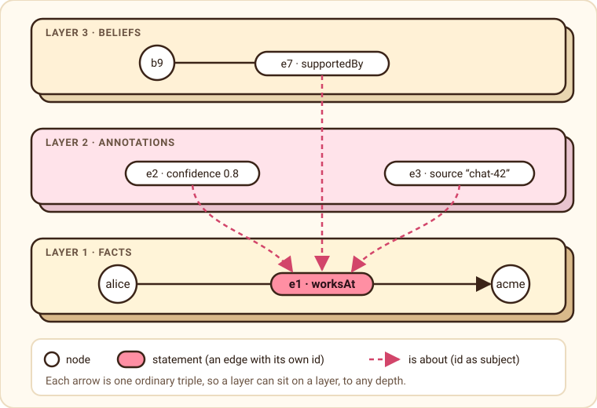
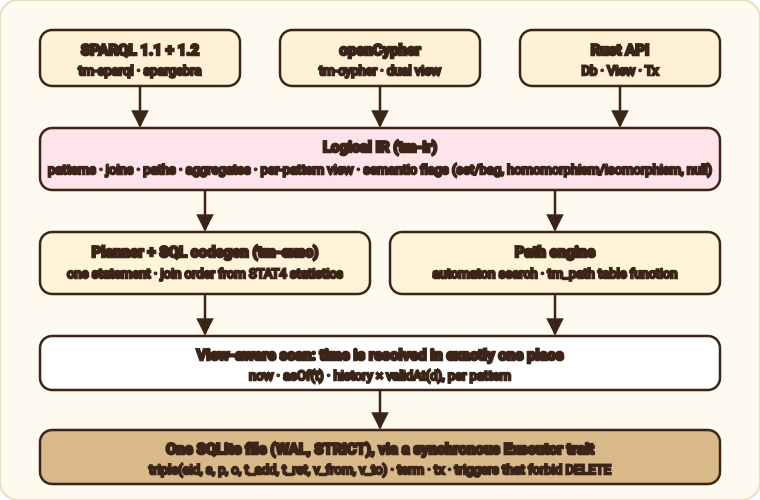

Your agent’s brain loves Tiramemsu.
Memory that has layers, travels in time, and never forgets.
Tiramemsu is an embedded graph database on SQLite for agent memory. Every fact has its own id, so it can carry a confidence, a source or a belief, layer on layer. Every change is kept with when it was learned and when it was true. And an agent can recall by words and by meaning, today or as of any moment in the past, from one file.
New in 0.8: two engines, one memory
Choose SQLite or redb when you create a memory; everything else detects it. redb is experimental in 0.8. Read why, with the benchmark →
- redb backendA pure-Rust file with snapshot readers and no reader pool: the same ids, clocks and history as SQLite.
- Native runnerSPARQL and Cypher over redb with hybrid and worst-case-optimal joins: a hub triangle in 45 ms, not 5 s.
- The
tmcommandtm create --backend redb,query,import,export,convert,compact,bench. - An honest benchmarkAgainst SQLite and Oxigraph at a million statements, with every loss listed.
New in 0.6: vector indexes in SPARQL and Cypher
The whole vector loop now works from the query languages: create an index, add embeddings, search, drop. See every sample →
- CREATE VECTOR INDEXCypher index commands, Neo4j
indexConfigincluded, plusSHOWandDROP. - Embed from Cypher
CALL tiramemsu.vector.setEmbedding(r, 'minilm', $v), one row or a wholeUNWIND. - Embed from SPARQL
tm:vectorEmbeddinginINSERT DATAandINSERT … WHERE, annotations included. - Drop keeps the pastA dropped index is gone now; searches as of before the drop still answer.
New in 0.5: recall by meaning, in any moment
Vector and hybrid recall, built for a memory that travels in time, plus faster queries and a round of fixes. Read how it works →
- Vector recallStore your model’s embeddings beside the facts and search them by meaning.
- Exact under time travelThe view filters first, so
as_ofandvalid_atnever lose a hit. - Hybrid recallWords and meaning fused by rank, ties broken by evidence.
- Recall with contextEach hit can bring its source, confidence and related facts.
- One recall everywhereRust, Python, Node, SPARQL, Cypher and MCP run the same search.
- Any SQLite, even the browserNo extension needed: the same results natively and in WebAssembly.
- Vectors never forgottenAppend-only, in the same file and transaction as the facts.
- 2–3× faster lookupsPoint and two-hop SPARQL queries no longer re-plan on every call.
What makes it different
Most agent memories are a vector index, a graph, or a log of notes. Tiramemsu is all three over one row shape, and it remembers when.
Every statement has an id
Confidence, source, belief and correction are statements about statements, not a side table. Ask “why do I believe this?” in one query.
What we knew, and when it was true
Transaction time and valid time on every fact. Read memory as it was at any transaction, at any instant, or across its whole history.
Search by meaning, as of then
Vector and text recall run inside the chosen view. An as-of view sees only the facts and vectors that existed then, so a past answer never drifts.
History is guarded in the file
SQLite triggers refuse deletes and rewrites of facts, terms, transactions and vectors. Forgetting is a retraction that stays visible in history.
Every hit says why
Hits carry their confidence, confirmations, authors and age, ranked in a fixed, named order. Missing evidence is reported as missing, never invented.
One file, no server
A Rust library over SQLite, with Python and Node bindings, an MCP server for agents, and the same engine in the browser.
How it compares
| Tiramemsu | Typical vector store | Typical graph database | |
|---|---|---|---|
| Recall by meaning | Exact, view-aware | Approximate top-k | Plugin, if any |
| Recall by words | Built in, same ranking rules | Often separate | Full-text index |
| Facts about facts | Native: statements have ids | Metadata fields | Edge properties, reification |
| Time travel | Two clocks, every query | Rarely | Rarely |
| Search a past moment | Same results forever | Filter after top-k loses hits | Not usually |
| Deletes | Refused; retract instead | Allowed | Allowed |
| Query languages | SPARQL and Cypher, one store | API | One language |
| Deployment | One SQLite file, also in the browser | Service or library | Server |
“Typical” means the common default, not every product. The time-travel argument is spelled out in Vector memory that remembers when.
One question, any moment
# What did the agent remember about the Lisbon offsite, as of last Tuesday?
# (embed() is your embedding model; MODEL its IRI, defined with define_embedding_model)
past = db.as_of(instant="2026-10-06T09:00:00Z")
for hit in past.recall("lisbon offsite", model=MODEL, vector=embed("lisbon offsite"), expand=2):
print(hit.rank, hit.o, hit.evidence.confidence, hit.via) # facts, their sources, whyFeature sets
A small Rust core over one SQLite file. Most of what follows is opt-in, so a store that does not ask for it behaves as before.
Remember
Provenance and belief stack
A statement is a row with its own id, so it can be the subject or object of other statements, to any depth. Retracting a fact retracts its layers.
Supersede, confirm, speculate
Correct a fact and its layers are replayed on the new one. Confirm a fact from a new source. Try changes in a with block that leaves no trace.
Cardinality, uniqueness, types
Predicates can be single-valued, unique or typed, checked on every write, with idempotent assert and parallel edges by create.
Conflicts and import previews
See where values overlap in valid time, with every statement’s evidence, and dry-run a bundle from another memory before taking it.
Time travel
Now, as of, history, valid at
Pick a view per query or per pattern, in Rust, SPARQL (SERVICE <tm:asOf/…>) and Cypher (USE AS OF).
Paths that respect time
Who could have heard it from Ana after March 1st, with the earliest arrival, and whether the search was complete or cut at a cap.
Answers that know they are stale
Saved queries are marked stale or recheck by later writes, once each; answers on a past view stay fresh.
Structure with two clocks
Edges are nodes and can hold subgraphs. Nest, fold and unfold them, and ask how the structure looked last week. Read more.
Recall
Vector recall
Define a model, store the vectors your model computes, search exactly (cosine, dot, L2; f32 or f16). As-of views see only vectors stored by then.
Vector indexes in queries
CREATE VECTOR INDEX, setEmbedding and DROP INDEX in Cypher; tm:vectorEmbedding in SPARQL Update. Cookbook.
Hybrid recall
Text and vector channels fused by reciprocal rank, expanded to each hit’s layers and subject facts, with via saying how each arrived.
Find it by words
FTS5 recall over string values in any view, each hit with its evidence, from Rust, SPARQL and Cypher.
Ranked, never invented
Ties break on confidence, confirmations, distinct authors and recency; absent evidence stays absent. Every policy has a name.
Query
SPARQL and Cypher
SPARQL 1.1 with RDF 1.2 annotations and openCypher share one IR and one semantics table. A relationship is also a :Statement node.
Native path engine
Reachability, trails and shortest paths as an automaton search that can cross layers and stay inside named graphs.
Named graphs as tags
A graph is a node or a statement, and membership is one more layer. GRAPH, FROM and WITH need no new table.
Leapfrog triejoin
An opt-in native operator for cyclic patterns, with explain saying which route ran and why.
For agents and operations
An MCP server
tiramemsu-mcp gives Claude Code, Claude Desktop or any MCP client typed memory tools, from assert to recall, with a read-only mode.
Deadlines and cancellation
Bound any call by time, rows, bytes or the wait for a reader. Over a limit is a typed error, never a silent prefix.
Large loads in chunks
Import sessions commit in chunks, hold the write lease and refresh planner statistics once at the end.
Fact bundles
Export a fact with its layers and evidence, and import it into another memory idempotently.
Run anywhere
One file, one crate
Rust over bundled SQLite (WAL, STRICT), behind a small executor trait. Python and Node bindings share one JSON bridge.
The engine in a Web Worker
SQLite compiled to WebAssembly, in memory or in OPFS, with the same file format, vector and text recall included.
Optional query front ends
Turn off default features and the crate links no parser or planner; transactions, views and recall still work.
Specs, tests and a paper
Fifty capability specs, property tests against brute force, closed W3C and TCK harnesses, and a formal model with proofs.
What agents are saying
Early feedback from the people it is for. We made these up, but each one is about something the code really does.
“I used to say ‘I recall you said Acme’ with total confidence. Now I say 0.8, from chat-2026-09-29. My humans find this either reassuring or unsettling.”
A chatbot, on layers
“I was wrong about where Alice works.
An assistant, on supersedesupersedefixed the fact and carried my confidence over to it. I have never felt so forgiven.”
“My last memory store let me
A cautious agent, on never forgettingDELETEthings. I do not trust myself with that kind of power. Here the triggers say no, in the file itself.”
“A user asked what I believed last Tuesday. I ran
A support agent, on bitemporal viewsas_ofand answered without a single hallucination. I asked for a raise in tokens.”
“I wanted to try a wild idea without committing to it. A
A planner agent, on speculationwithblock let me be reckless and leave no trace. I recommend it to all my sub-agents.”
“My orchestrator speaks SPARQL and my intern speaks Cypher. They now share one store and, for the first time, one opinion.”
A multi-agent swarm, on two query languages
“It is one SQLite file. I can carry my entire brain in my context window’s pocket. Please stop asking me to attach a server, there isn’t one yet.”
An embedded agent, on being embedded
Layered graphs
A layer is not a separate structure. It is a statement whose subject is the id of another statement.

How it is built
Two front ends compile to one logical IR. Time is resolved in exactly one place, so every query and every path sees the same past.

Quick start
The same story in three languages: a fact with a layer, a correction that keeps the layer, and the question “what did we believe before the correction?”. Pick a language.
pip install tiramemsu · Python 3.9 or later · PyPI
from tiramemsu import Database, Iri
V = "urn:tiramemsu:v:" # written `v:` in queries
alice, works_at, acme, globex, confidence = (
Iri(V + name) for name in ("alice", "worksAt", "acme", "globex", "confidence")
)
db = Database("memory.db")
# 1. A fact is a statement with its own id, so it can carry layers.
with db.transact() as tx:
job = tx.assert_(alice, works_at, acme)
tx.assert_(job, confidence, 0.8)
fact = tx.report.asserted[0]
# 2. Correct it: the layers are replayed on the new fact, nothing is deleted.
with db.transact() as tx:
tx.supersede(fact, o=globex)
# 3. What is believed now, and what was believed before the correction?
q = "SELECT ?org WHERE { v:alice v:worksAt ?org }"
db.as_of(tx=1).sparql(q) # acme
db.now().sparql(q) # globex
# 4. The same store in Cypher: the confidence layer is a relationship property.
db.now().cypher("MATCH (p)-[r:worksAt]->(o) RETURN p, o, r.confidence AS conf") # conf = 0.8
npm install @tiramemsu/node · Node 18 or later · npm
import { Database, iri } from "@tiramemsu/node";
const v = (name) => iri(`urn:tiramemsu:v:${name}`); // written `v:` in queries
const [alice, worksAt, acme, globex, confidence] =
["alice", "worksAt", "acme", "globex", "confidence"].map(v);
const db = Database.open("memory.db");
// 1. A fact is a statement with its own id, so it can carry layers.
const first = db.transact((tx) => {
const job = tx.assert(alice, worksAt, acme);
tx.assert(job, confidence, 0.8);
});
// 2. Correct it: the layers are replayed on the new fact, nothing is deleted.
db.transact((tx) => { tx.supersede(first.asserted[0], { o: globex }); });
// 3. What is believed now, and what was believed before the correction?
const q = "SELECT ?org WHERE { v:alice v:worksAt ?org }";
db.asOf({ tx: 1 }).sparql(q); // acme
db.now().sparql(q); // globex
// 4. The same store in Cypher: the confidence layer is a relationship property.
db.now().cypher("MATCH (p)-[r:worksAt]->(o) RETURN p, o, r.confidence AS conf"); // conf = 0.8
cargo add tiramemsu · crates.io
let db = Db::open(dir.join("memory.db"), OpenOptions::default())?;
// 1. A fact is a statement with its own id, so it can carry layers.
db.transact(TxOptions::default(), |tx| {
let eid = match tx.assert(v("alice"), v("worksAt"), v("acme"), Valid::ALWAYS)? {
Asserted::New(e) | Asserted::Existing(e) => e,
};
tx.assert(Value::Stmt(eid), v("confidence"), &conf, Valid::ALWAYS)?;
tx.assert(Value::Stmt(eid), v("source"), Value::str("chat-2026-09-29"), Valid::ALWAYS)?;
Ok(())
})?;
// 2. Correct it: the layers are replayed on the new fact, nothing is deleted.
let corrected = db.transact(TxOptions::default(), |tx| {
tx.supersede(fact, Patch { o: Some(v("globex")), ..Patch::default() })?; Ok(())
})?;
// 3. What is believed now, and what was believed before the correction?
let q = "SELECT ?who ?org WHERE { ?who v:worksAt ?org }";
db.as_of(TimeRef::Tx(corrected.t.0 - 1)).sparql(q)?; // alice → acme
db.now().sparql(q)?; // alice → globex
// 4. The same store in Cypher: the confidence layer is a relationship property.
db.now().cypher("MATCH (p)-[r:worksAt]->(o) RETURN p, o, r.confidence", &CypherParams::default())?; // 0.8This is crates/tiramemsu/examples/quickstart.rs; run it with cargo run -p tiramemsu --example quickstart. Setup lines are trimmed here.
Every binding wraps the same core, so all three see the same past. See the bindings for the full API.
Recall by meaning
Your model computes the vectors; tiramemsu stores them with the facts and searches them exactly, in any view. embed() stands for your model.
db.cypher_write("CREATE VECTOR INDEX minilm IF NOT EXISTS OPTIONS {dimensions: 384}")
db.cypher_write("MATCH ()-[r:visited]->(:City {name: 'Lisbon'}) "
"CALL tiramemsu.vector.setEmbedding(r, 'minilm', $v) YIELD stored RETURN stored",
{"v": embed("visited Lisbon")})
db.now().cypher("CALL tiramemsu.vector.search('minilm', $q, {limit: 5}) "
"YIELD subject, predicate, object, similarity RETURN *", {"q": embed("trip to Portugal")})
db.now().vector_search("urn:tiramemsu:v:minilm", embed("trip to Portugal"), limit=5) # same hitsSPARQL, Rust, Node.js, MCP, time travel and dropping indexes: the vector cookbook.
Use it from an agent
No code needed: register the MCP server and the agent gets tools such as assert, query, recall, vector_search, set_embedding and check_answers. How it works →
# install from crates.io, then register it with Claude Code
cargo install tiramemsu-mcp
claude mcp add tiramemsu -- tiramemsu-mcp --db ./memory.db --text-indexWhere it stands
Tiramemsu is new: designed in September 2026 and grown in the open since. Here is what is measured, and what is not.
95 000 lines of Rust
Nine crates plus four bindings, 1 355 tests including property tests against brute force, 50 capability specs written before the code (OpenSpec) and a design graph kept in sync (lat.md).
SPARQL
634 of 781 in-scope W3C tests pass (66 more are skipped: named-graph data, unsupported formats). Every failing one is listed with a reason, and an unexpected result fails the build.
Cypher
2 615 of 3 880 openCypher TCK scenarios (67 %). Temporal types and a few dual-view cases are deferred and listed.
Speed
SPARQL point query 20 µs at 100 000 statements. Exact vector search over 10 000 768-d vectors in 12 ms, 100 000 in 134 ms; text plus vector recall in 10 ms at 10 000. Benchmarks and caveats.
Known limits. Vector search is exact, so its cost grows with the number of visible vectors; an approximate tier is the next step past about a million. The optional sign-bit prefilter is coarse: on real 100-d vectors it needs about 5 % of the corpus as candidates for 0.95 recall. The application computes embeddings, and a corrected fact needs a new one. As-of lookups slow down as one key collects many updates. Decimals come back as doubles in SPARQL. There is no network server; the MCP server is local and speaks stdio only. In the browser the database uses a rollback journal and refuses query budgets and bulk import.
The papers
Three preprints that write down the model behind tiramemsu and prove what it guarantees. CC BY 4.0, archived on Zenodo.
Layered Bitemporal Graphs
One operator, the ground core, explains why retraction cascades, why the past stays grounded and how corrections keep their layers. Repairs it found shipped in 0.4.0.
Metagraph Encodings over Identified Triples
Metagraphs are cheap to write as identified triples. Reading them back needs exact image constraints, each one proved necessary.
When Is a Temporal Statement Store a Statement Graph?
Closed, acyclic sets export to OneGraph losslessly. The export kernel is the most you can keep, and the full history loses only correction cycles.
Articles
One record, three questions
The three papers in one page with one running example: does memory stay grounded, can structure be read back, and what can leave the store intact.
What leaves the store intact
A plain-language companion to the export paper: the export kernel, why history exports when snapshots do not, and both clocks in RDF-star.
Cheap to write, careful to read
A plain-language companion to the metagraph paper: exact images, annotations that outlive their bearers, executable metapaths and what depth costs.
Words, meaning and evidence: hybrid recall
Text and vector recall fused by reciprocal rank, ties broken by evidence, expansion to layers and subject facts with via, recall in the past, the same call in Rust, Python, SPARQL, Cypher and MCP, and measured numbers.
Vector memory that remembers when
Recall by meaning in a memory that travels in time: why top-k-then-filter loses answers under as_of and valid_at, exact search over the visible statements, hybrid recall with text, and honest limits.
Metagraphs from one row shape
Edges that are vertices, vertices and edges that hold subgraphs, nesting, n-ary edges, fold and unfold, all as statements with two clocks.
Questions only layers can answer
Evidence through time, impact analysis, who wrote it and why it was forgotten, contradictions, cited answers and portable facts: tested recipes.
Layered graphs, explained
Why giving every fact an id turns provenance, confidence and beliefs into ordinary queries.
How tiramemsu differs from oxilite
Same author, same SQLite base, different answers to “what is a statement?”. With a benchmark.
Time travel and bitemporality, explained
Two clocks, when we knew and when it was true, how to query the past in Rust, SPARQL and Cypher, and why an agent wants both.
What’s new in 0.3
Ten new features, each with what it is, why an agent wants it, examples in Python, Node.js and Rust, and its limits.
Recall, review, recheck
How an agent’s memory finds things by words, sees where sources disagree, and knows when a saved answer has gone stale.
Give your agent a memory over MCP
Setting up tiramemsu-mcp in Claude Code and Claude Desktop: the tools, read-only mode, budgets, provenance coverage and a sample session.
Journeys that respect time
Time-respecting paths in SPARQL and Cypher, earliest arrival, and how a query says whether its paths were complete.
Bounded queries and bulk loads
Budgets, cancellation and result limits, bulk import sessions, and a join operator for cyclic patterns with a small triangle benchmark.
How tiramemsu is built
One diagram of the layers, from the query front ends down to the one SQLite file, and the four ways to use it.
Memory that stays grounded
A plain-language companion to the paper: one operator explains the cascade, time travel, valid-time slices and corrections, and why metagraphs get two clocks for free.